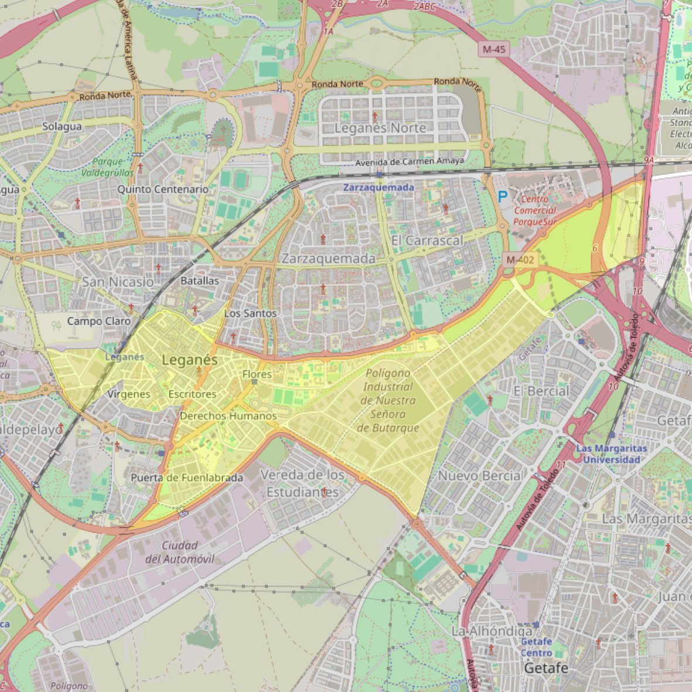

San Salvador

- Arciprestazgo
- Leganés
- Población
- Leganés
- Dirección postal
- Pza. de España, s/n
- Código postal
- 28911
- Extensión
- 3,51 km² (351 ha)
- Teléfono
- 916 937 532
- Correo electrónico
- sansalvador-leganes@diocesisgetafe.es
Arciprestazgos y parroquias de la Diócesis de Getafe
